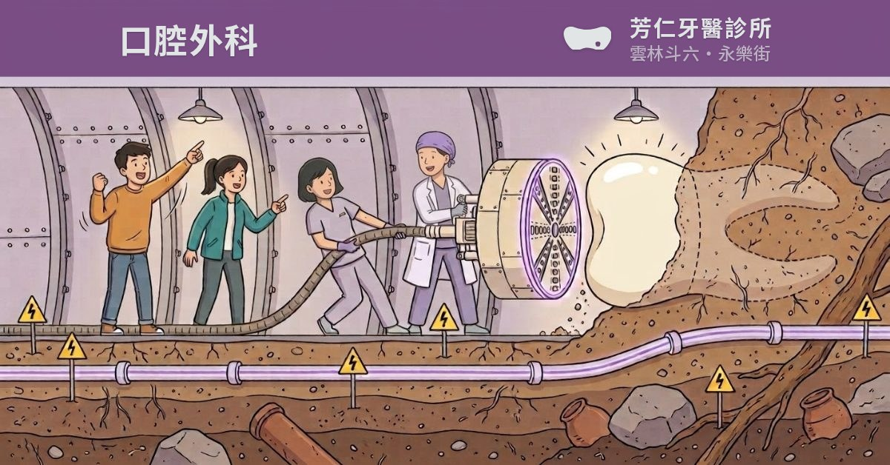

2026-08-25・圖已定稿。四格都是**真的產出檔**，不是 CSS 疊的。
卡片寬 212 CSS px（手機截圖實測），圖已照訊息 app 的裁法只留中央一段。
LINE：只顯示原圖寬度的 89.7%（左右各裁 5.2%）

| 格 | 帶子實際落在 | 紙色字對比 | 白字 | ΔE 對站上標籤 |
|---|---|---|---|---|
| Ⓐ 淡 | rgb(143,98,153) | 3.79 | 4.80 | 0.4（＝套色） |
| Ⓑ 中 | rgb(131,88,142) | 4.42 | 5.60 | 4.1 |
| Ⓒ 濃 | rgb(122,77,132) | 5.15 | 6.52 | 1.2（＝深階） |
| Ⓓ 最濃 | rgb(96,63,108) | 6.84 | 8.66 | 9.3 |
紙色字＝帶子上那幾個字的顏色（#e2e5e6）。站上的門檻是 4.5，
但七科裡已經有四張是知情的取捨（一般 4.40／根管 4.06／矯正 3.61／兒牙白字 3.22）。
Ⓐ 與 Ⓒ 是站上真的有的色階（套色 #8e6299／深階 #784e84）；
Ⓑ 與 Ⓓ 是內插與外推出來的新色，選了就等於在站上開一個新色階
—— 植牙那一輪同樣的兩格最後沒有選。
對矯正那條帶子四格都是 ΔE 30 以上，不會有植牙那次的撞色問題。
node tools/og-resize.mjs drafts/og-topic-surg-src.jpg surg
node tools/og-plate.mjs surg --blend multiply --tintcolor '#a66eb4' --ink 0.18 --blur 6 --loc full --locpos stack
補償色是從這張圖頂端那面牆（襯砌）實測的 rgb(211,199,216) 算出來的，每一格各不相同。